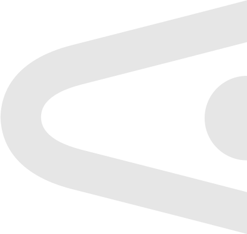
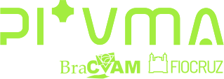
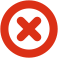
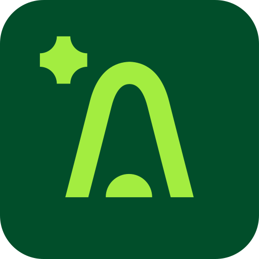
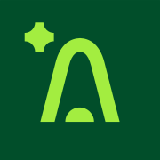
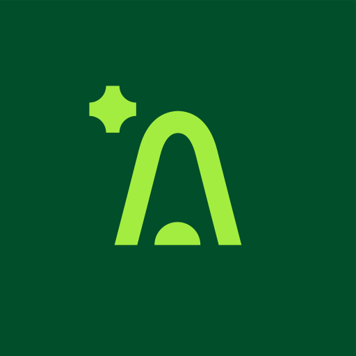
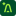

Plataforma Inteligente de Validação de Métodos Alternativos: apoia a submissão, a validação e a rastreabilidade do processo de criação de novos métodos alternativos, assegurando confiabilidade, transparência e relevância científica.
Manual de marca · baseado no Guia de estilos pi*VMA · guia = lido do PDF · derivado = proposta para interface
Seis versões em SVG (vetor) e PNG transparente. Escolha pelo fundo: lima sobre verde/azul, verde sobre claro em telas funcionais, multicolor em material institucional.

O guia não define estas regras; proposta: margem livre de metade da altura do logotipo em todos os lados, e 96 px de largura mínima em tela (abaixo disso, use o símbolo "A").
Não: distorcer, girar, recolorir letras, aplicar sombra ou contorno, usar lima em fundo claro, colocar sobre fotos sem escurecer.
Quatro elementos: o "A" (arco com ponto), a estrela de brilho, o check (aprovado) e o X (reprovado). Cada um existe em lima, verde, papel, cinza, azul, vermelho e amarelo, além de versões currentColor para uso inline.

Os quatro ícones cinza são do guia (p.6). As versões coloridas, o favicon e os arquivos de PWA foram derivados da paleta derivado.




<link rel="icon" href="/favicon.ico" sizes="48x48">
<link rel="icon" href="/favicon.svg" type="image/svg+xml">
<link rel="apple-touch-icon" href="/apple-touch-icon.png">
<link rel="manifest" href="/site.webmanifest">
<meta name="theme-color" content="#014e2a">Clique num cartão para copiar o hex. O guia lista #025ecc como azul, mas o azul vivo usado no fundo, nas etiquetas e no ponto do logotipo é #0167f7: confirme qual é o oficial para botões e links.
| Texto sobre fundo | Razão | Uso |
|---|---|---|
| Verde sobre branco | 9,9:1 | ✓ qualquer texto |
| Verde sobre #efefef | 8,6:1 | ✓ qualquer texto |
| Lima sobre verde | 6,9:1 | ✓ qualquer texto |
| Branco sobre azul vivo | 4,9:1 | ✓ botões e texto |
| Branco sobre vermelho | 4,7:1 | ✓ |
| Verde sobre amarelo | 4,7:1 | ✓ |
| Lima sobre azul vivo | 3,4:1 | ⚠ só texto grande |
| #efefef sobre vermelho | 4,1:1 | ⚠ só texto grande |
| Cinza #b2b2b2 sobre #efefef | 1,8:1 | ✗ só decorativo |
| Amarelo sobre claro | 1,8–2,1:1 | ✗ nunca texto |
Barlow Font Family Títulos
Somente SemiBold (600).
Lexend Font Family Corpo, parágrafos, web
Light 300 · Regular 400 · Medium 500 · SemiBold 600 · Bold 700 · ExtraBold 800
Corpo 16/1,55 (Lexend 400): a plataforma apoia a submissão, a validação e a rastreabilidade do processo de criação de novos métodos alternativos.
Corpo pequeno 14 · Rótulo 12 Light
O guia não traz componentes de interface; estes exemplos aplicam as cores, fontes e raios da marca com contrastes verificados.
Grandes formas derivadas do arco do "A", sempre tom sobre tom e cortadas pela borda. Use em abertura, login, estados vazios e capas.